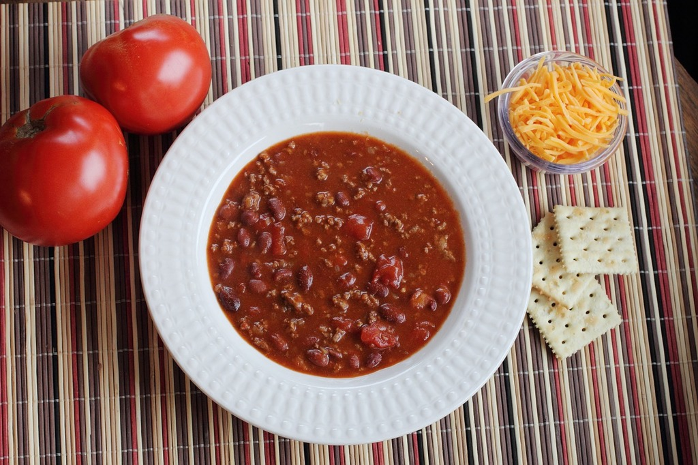

This hearty chili is a rich, comforting dish made by slowly simmering ground beef with onions, garlic, tomatoes, beans, and a blend of warming spices. The recipe begins by browning the beef until it develops deep flavor, then sautéing the onions and garlic until fragrant. Crushed tomatoes, kidney beans, and a mixture of chili powder, cumin, paprika, and oregano are added to the pot, creating a thick and savory base. As the ingredients cook together, the spices infuse the chili with a smoky, mildly spicy character.
The chili is left to simmer gently for at least an hour, allowing the flavors to meld and deepen. The result is a hearty, satisfying stew with tender meat, creamy beans, and a robust tomato-rich sauce. Served hot and often topped with shredded cheese, sour cream, green onions, or fresh cilantro, this classic chili makes a comforting meal on its own or alongside cornbread, rice, or crusty bread.